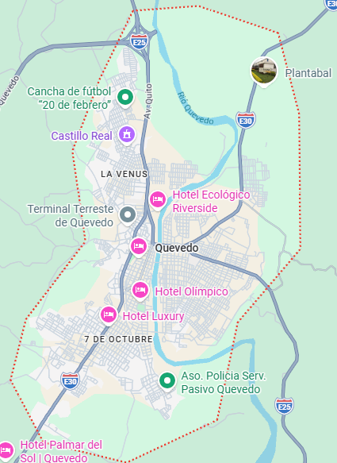

Reseña:: Conocida como la "Capital Económica de Los Ríos", es el polo comercial más dinámico de la provincia. Destaca por su alta convergencia migratoria y una fuerte e histórica comunidad china local.
Urbanas: Quevedo, San Camilo, San Cristóbal, Venus del Río Quevedo, Nicolás Infante Díaz, Guayacán, Siete de Octubre, 24 de Mayo, El Pantano.
Rurales: San Carlos, La Esperanza.
El tradicional chifa fluminense (fusión gastronómica china-montuvia) y el clásico estofado de boca chico.
Malecón Eloy Alfaro: Un espacio de recreación familiar a las orillas del Río Quevedo con áreas verdes, comerciales y vistas panorámicas urbanas.
Ruta de las Haciendas Bananeras: Recorridos agro-turísticos enfocados en mostrar los procesos internacionales de exportación del banano ecuatoriano.
Hotel Olímpico, Hotel Executive.

Alexis Matute Matute.
